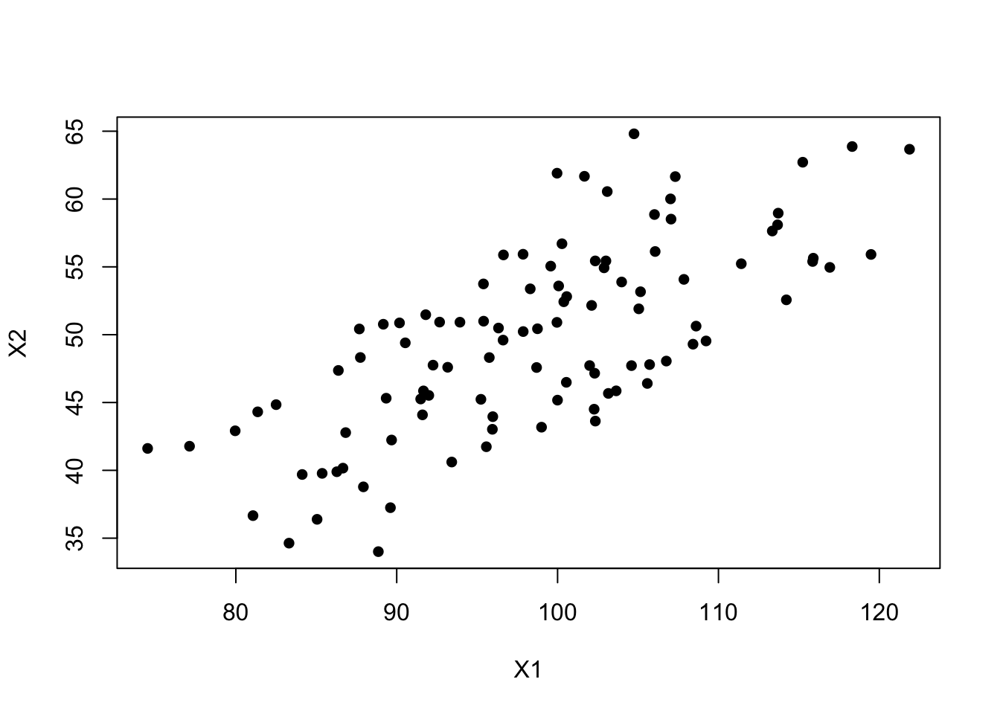
14 Principal Component Analysis
Packages Used
This chapter uses the following packages: factoextra
More nomenclature tidbits: It’s “Principal” Components (adjective), not “Principle” Components (noun)
From Grammarist:
As a noun, principal refers to (1) one who holds a presiding position or rank, and (2) capital or property before interest, and it’s also an adjective meaning (3) first or most important in rank
Principle is only a noun. In its primary sense, it refers to a basic truth, law, assumption, or rule.
This third definition (3) is the context in which we will be using this term.
14.1 When is Principal Components Analysis (PCA) used?
- simplify the description of a set of interrelated variables.
- transform a set of correlated variables, to a new set of uncorrelated variables
- dimension reduction: collapse many variables into a few number of variables while maintaining the same amount of variation present in the data.
- Statistical modeling is all about explaining variance in an outcome based on the variance in predictors.
- The new variables are called principal components, and they are ordered by the amount of variance they contain.
- So the first few principal components, may contain the same amount of variance (information) contained in a much larger set of original variables.
- multivariable outlier detection
- individual records that have high values on the principal components variables are candidates for outliers or blunders on multiple variables.
- as a solution for multicollinearity
- often is it useful to obtain the first few principal components corresponding to a set of highly correlated X variables, and then conduct regression analysis on the selected components.
- as a step towards factor analysis (next section)
- as an exploratory technique that may be used in gaining a better understanding of the relationships between measures.
Not variable selection
Principal Components Analysis (PCA) differs from variable selection in two ways:
- No dependent variable exists
- Variables are not eliminated but rather summary variables, i.e., principal components, are computed from all of the original variables.
We are trying to understand a phenomenon by collecting a series of component measurements, but the underlying mechanics is complex and not easily understood by simply looking at each component individually. The data could be redundant and high levels of multicolinearity may be present.
14.2 Basic Idea - change of coordinates
Let’s simulate a data set that consists of 100 random pairs of observations \(X_{1}\) and \(X_{2}\) that are correlated. Let \(X_{1} \sim \mathcal{N}(100, 100)\), \(X_{2} \sim \mathcal{N}(50, 50)\), with \(\rho\) the correlation between \(X_{1}\) and \(X_{12}\) set to $.
In matrix notation this is written as: \(\mathbf{X} \sim \mathcal{N}\left(\mathbf{\mu}, \mathbf{\Sigma}\right)\) where \[\mathbf{\mu} = \left(\begin{array} {r} \mu_{1} \\ \mu_{2} \end{array}\right), \mathbf{\Sigma} = \left(\begin{array} {cc} \sigma_{1}^{2} & \rho\sigma_{1}\sigma_{2} \\ \rho\sigma_{1}\sigma_{2} & \sigma_{2}^{2} \end{array}\right) \].
Goal: Create two new variables \(C_{1}\) and \(C_{2}\) as linear combinations of \(\mathbf{x_{1}}\) and \(\mathbf{x_{2}}\)
\[ \mathbf{C_{1}} = a_{11}\mathbf{x_{1}} + a_{12}\mathbf{x_{2}} \] \[ \mathbf{C_{2}} = a_{21}\mathbf{x_{1}} + a_{22}\mathbf{x_{2}} \]
or more simply \(\mathbf{C = aX}\), where
- The \(\mathbf{x}\)’s have been centered by subtracting their mean (\(\mathbf{x_{1}} = x_{1}-\bar{x_{1}}\))
- \(Var(C_{1})\) is as large as possible
Graphically we’re creating two new axes, where now \(C_{1}\) and \(C_{2}\) are uncorrelated.
PCA is mathematically defined as an orthogonal linear transformation that transforms the data to a new coordinate system such that the greatest variance by some projection of the data comes to lie on the first coordinate (called the first principal component), the second greatest variance on the second coordinate, and so on. Wikipedia
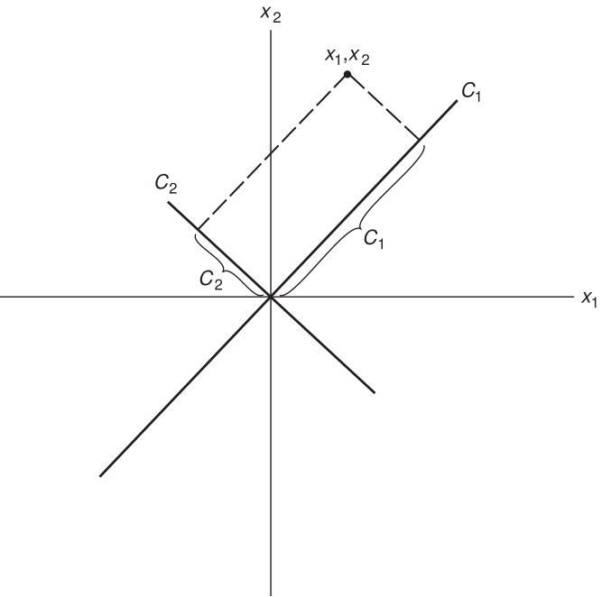
In Linear Algebra terms, this is a change of basis. We are changing from a coordinate system of \((x_{1},x_{2})\) to \((c_{1}, c_{2})\). If you want to see more about this concept, here is a good YouTube Video.
14.3 More Generally
We want
- From \(P\) original variables \(X_{1}, \ldots , X_{P}\) get \(P\) principal components \(C_{1}, \ldots , C_{P}\)
- Where each \(C_{j}\) is a linear combination of the \(X_{i}\)’s: \(C_{j} = a_{j1}X_{1} + a_{j2}X_{2} + \ldots + a_{jP}X_{P}\)
- The coefficients are chosen such that \(Var(C_{1}) \geq Var(C_{2}) \geq \ldots \geq Var(C_{P})\)
- Variance is a measure of information. Consider modeling prostate cancer.
- Gender has 0 variance. No information.
- Size of tumor: the variance is > 0, it provides useful information.
- Variance is a measure of information. Consider modeling prostate cancer.
- Any two PC’s are uncorrelated: \(Cov(C_{i}, C_{j})=0, \quad \forall i \neq j\)
We have
\[ \left[ \begin{array}{r} C_{1} \\ C_{2} \\ \vdots \\ C_{P} \end{array} \right] = \left[ \begin{array}{cccc} a_{11} & a_{12} & \ldots & a_{1P} \\ a_{21} & a_{22} & \ldots & a_{2P} \\ \vdots & \vdots & \ddots & \vdots \\ a_{P1} & a_{P2} & \ldots & a_{PP} \end{array} \right] \left[ \begin{array}{r} X_{1} \\ X_{2} \\ \vdots \\ X_{P} \end{array} \right] \]
- Hotelling (1933) showed that the columns of the matrix \(a_{ij}\) are solutions to \((\mathbf{\Sigma} -\lambda\mathbf{I})\mathbf{a}=\mathbf{0}\).
- \(\mathbf{\Sigma}\) is the variance-covariance matrix of the \(\mathbf{X}\) variables.
- \(\mathbf{\Sigma}\) is the variance-covariance matrix of the \(\mathbf{X}\) variables.
- This means \(\lambda\) is an eigenvalue and \(\mathbf{a}\) an eigenvector of the covariance matrix \(\mathbf{\Sigma}\).
- (Optional) Learn more about eigenvalues [in this video].
- Problem: There are infinite number of possible \(\mathbf{a}\)’s
- Solution: Choose \(a_{ij}\)’s such that the sum of the squares of the coefficients for any one eigenvector is = 1.
- \(P\) unique eigenvalues and \(P\) corresponding eigenvectors.
Which gives us
- Variances of the \(C_{j}\)’s add up to the sum of the variances of the original variables (total variance).
- Can be thought of as variance decomposition into orthogonal (independet) vectors (variables).
- With \(Var(C_{1}) \geq Var(C_{2}) \geq \ldots \geq Var(C_{P})\).
14.4 R commands
Corresponding reading
PMA6 Ch 14.3-14.4
Calculating the principal components in R can be done using the function prcomp(), princomp() and functions from the factoextra package. This section of notes uses princomp() to generate the PCAs and helper functions from factoextra package. STHDA is a great reference for these functions.
14.4.1 Generating PC’s
The matrix that is used in princomp must be fully numeric.
pr <- princomp(data)14.4.2 Viewing the amount of variance contained by each PC
Use summary or get_eigenvalue to see the variance breakdown.
summary(pr)Importance of components:
Comp.1 Comp.2
Standard deviation 11.4019265 4.2236767
Proportion of Variance 0.8793355 0.1206645
Cumulative Proportion 0.8793355 1.0000000factoextra::get_eigenvalue(pr) eigenvalue variance.percent cumulative.variance.percent
Dim.1 130.00393 87.93355 87.93355
Dim.2 17.83944 12.06645 100.00000The first PC (Comp.1) will always explain the highest proportion of variance (by mathematical design).
14.4.3 Visualize Loadings
- The values for the matrix \(\mathbf{A}\) is contained in
pr$loadings. Alternatively theloadingsfunction will extract this matrix.
pr$loadings
Loadings:
Comp.1 Comp.2
X1 0.854 0.519
X2 0.519 -0.854
Comp.1 Comp.2
SS loadings 1.0 1.0
Proportion Var 0.5 0.5
Cumulative Var 0.5 1.0loadings(pr)
Loadings:
Comp.1 Comp.2
X1 0.854 0.519
X2 0.519 -0.854
Comp.1 Comp.2
SS loadings 1.0 1.0
Proportion Var 0.5 0.5
Cumulative Var 0.5 1.0\[ C_{1} = 0.854x_1 + 0.519X_2 \\ C_{2} = 0.519x_1 - 0.854X_2 \]
To visualize how these two new PC’s create new axes these new axes, we plot the centered data.
a <- pr$loadings
x1 <- with(data, X1 - mean(X1))
x2 <- with(data, X2 - mean(X2))
plot(c(-40, 40), c(-20, 20), type="n",xlab="x1", ylab="x2")
points(x=x1, y=x2, pch=16)
abline(0, a[2,1]/a[1,1]); text(30, 10, expression(C[1]))
abline(0, a[2,2]/a[1,2]); text(-10, 20, expression(C[2]))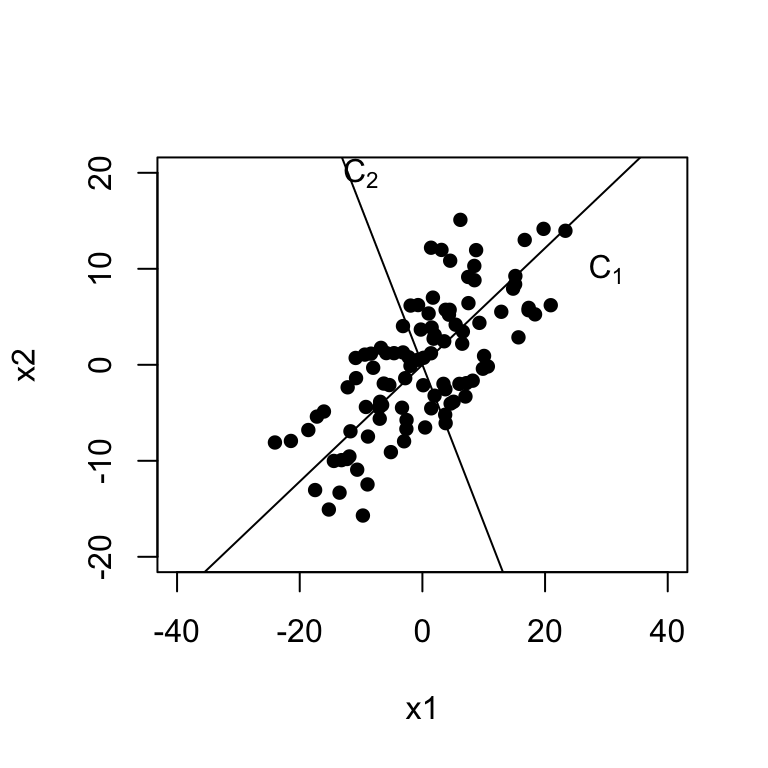
Another useful plot is called a biplot. Here the PC’s are on the dominant axes, and the red vectors show you the magnitude and direction of the original variables on this new axis.
biplot(pr)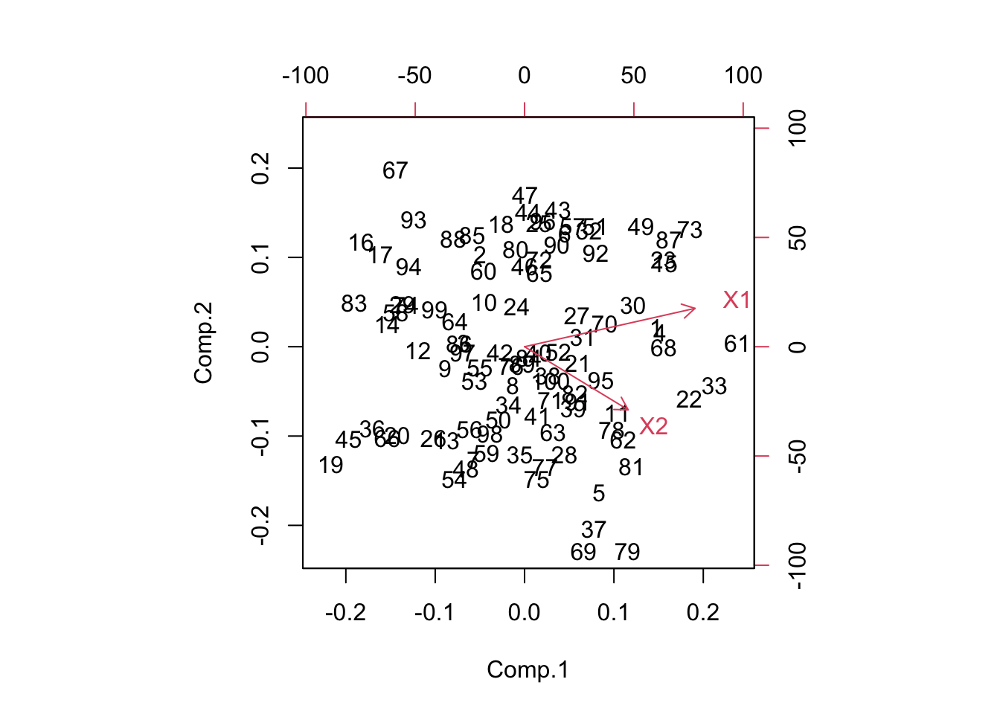
library(factoextra)
fviz_pca_biplot(pr)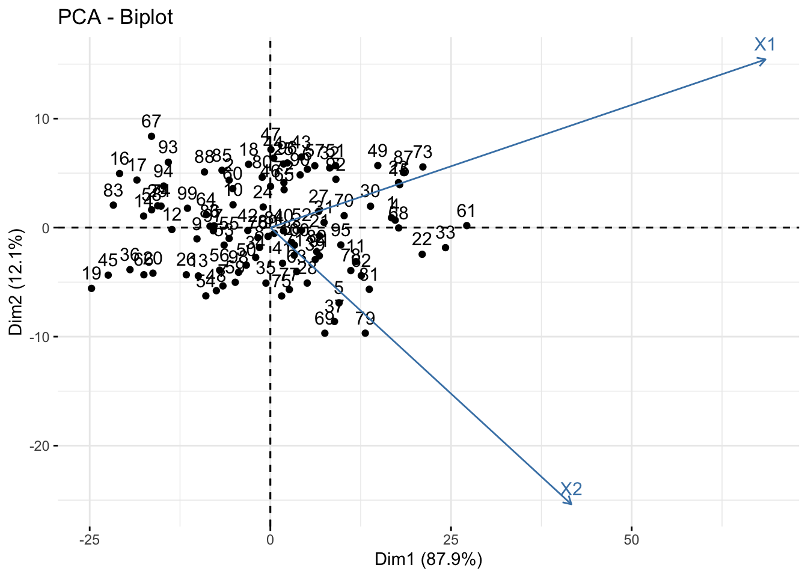
- X1 is positively correlated with both PC1 and PC2
- X2 is positively correlated with PC1 but negatively correlated with PC2.
This information was also seen in the loading values.
- Often in high dimensional studies, the loadings are visualized using a heatmap.
- Here we use the
heatmap.2()in thegplotspackage. I encourage you to play with the options such asdendogramandtraceto see what they remove/add, and review the?heatmap.2help file.
library(gplots)
heatmap.2(pr$loadings, dendrogram="none", trace="none", density.info="none")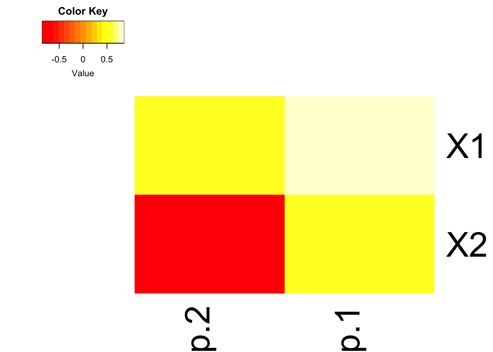
Contribution of rows/columns to the PC’s. For a given dimension, any row/column with a contribution above the reference line could be considered as important in contributing to the dimension.
fviz_contrib(pr, choice = "var", axes = 1)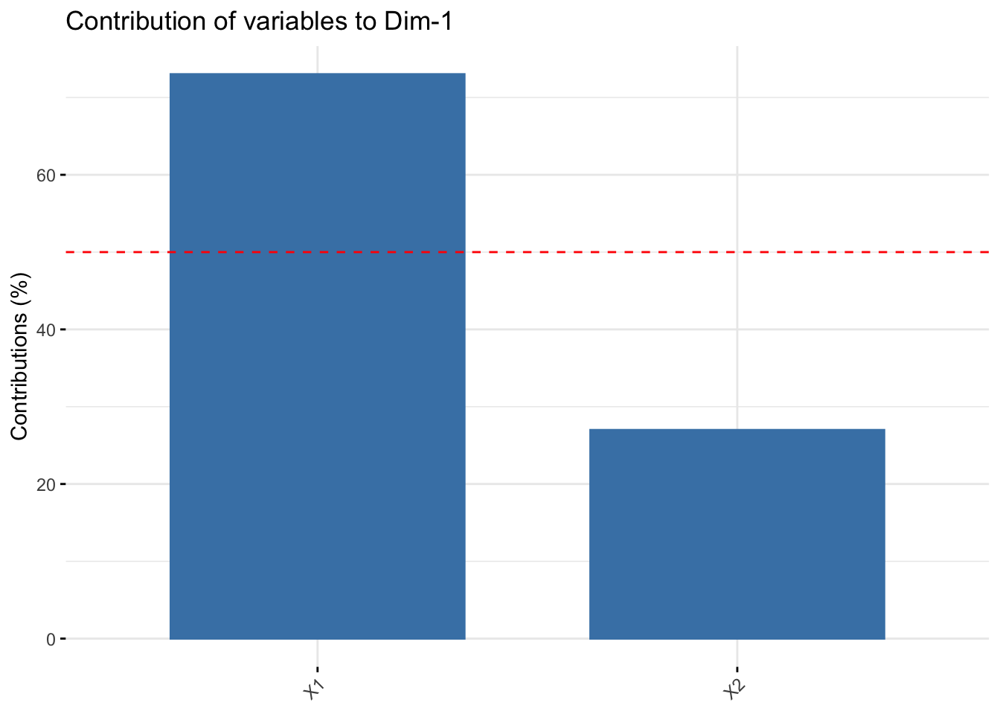
X1 contributes more than half of the amount of information to PC1 compared to X2
With only 2 PC’s this isn’t that informative. The later example and the vignette are likely more helpful.
See STDHA correlation circle for detailed information.
fviz_pca_var(pr, col.var = "contrib", axes=c(1,2),
gradient.cols = c("#00AFBB", "#E7B800", "#FC4E07"),
repel = TRUE # Avoid text overlapping
)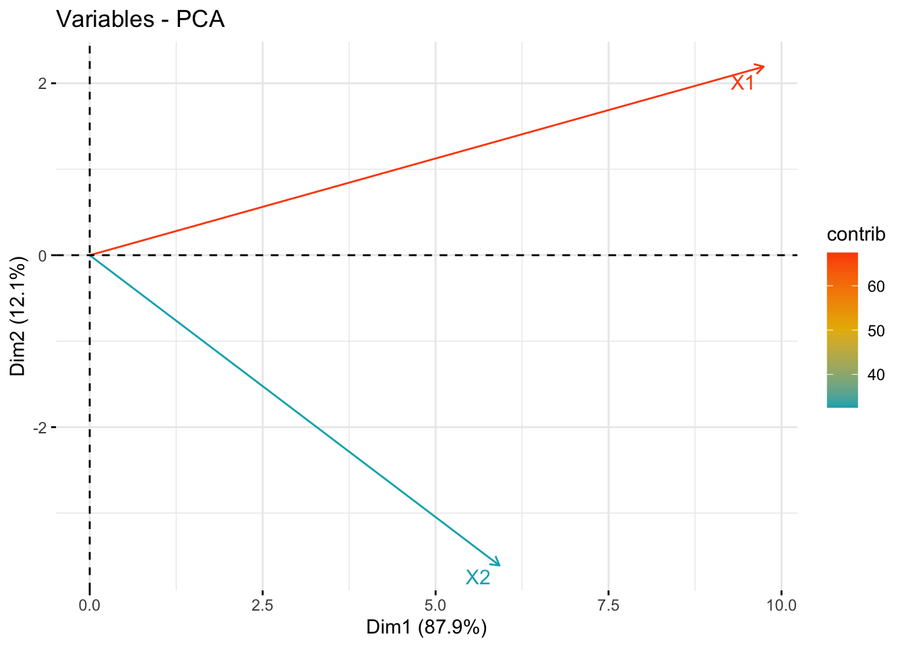
14.5 Data Reduction
Corresponding reading
PMA6 Ch 14.5
- Keep first \(m\) principal components as representatives of original P variables
- Keep enough to explain a large percentage of original total variance.
- Ideally you want a small number of PC’s that explain a large percentage of the total variance.
14.5.1 Choosing \(m\)
- Rely on existing theory
- Explain a given % of variance (cumulative percentage plot)
- All eigenvalues > 1 (Scree plot)
- Elbow rule (Scree Plot)
A Scree plot is created by plotting the eigenvalue against the PC number.
fviz_eig(pr, addlabels = TRUE)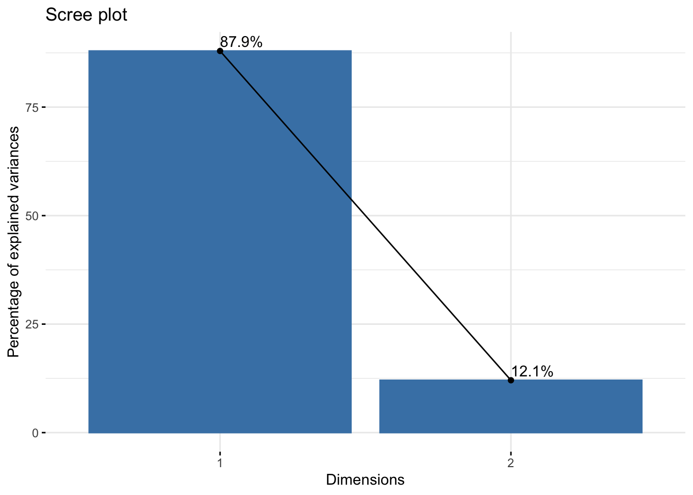
These are best understood using an example containing more than two PC’s, but there is one more thing to consider first and that is how the data is prepared before calculating the principal components.
14.6 Standardizing
Often researchers will standardize the \(x\) variables before conducting a PCA.
Standardizing: Take \(X\) and divide each element by \(\sigma_{x}\).
\[\frac{X}{\sigma_{X}}\]
Normalizing: Centering and standardizing.
\[Z = \frac{(X-\bar{X})}{\sigma_{X}}\]
Equivalent to analyzing the correlation matrix (\(\mathbf{R}\)) instead of covariance matrix (\(\mathbf{\Sigma}\)).
Using correlation matrix vs covariance matrix will generate different PC’s
This makes sense given the difference in matricies:
cov(data) #Covariance Matrix X1 X2
X1 100.74146 50.29187
X2 50.29187 48.59528cor(data) #Correlation Matrix X1 X2
X1 1.0000000 0.7187811
X2 0.7187811 1.0000000Standardizing your data prior to analysis (using \(\mathbf{R}\) instead of \(\mathbf{\Sigma}\)) aids the interpretation of the PC’s in a few ways
- The total variance is the number of variables \(P\)
- The proportion explained by each PC is the corresponding eigenvalue / \(P\)
- The correlation between \(C_{i}\) and standardized variable \(x_{j}\) can be written as \(r_{ij} = a_{ij}SD(C_{i})\)
This last point means that for any given \(C_{i}\) we can quantify the relative degree of dependence of the PC on each of the standardized variables. This is a.k.a. the factor loading (we will return to this key term later).
To calculate the principal components using the correlation matrix using princomp, set the cor argument to TRUE.
pr_corr <- princomp(data, cor=TRUE)
summary(pr_corr)Importance of components:
Comp.1 Comp.2
Standard deviation 1.3110229 0.5303008
Proportion of Variance 0.8593906 0.1406094
Cumulative Proportion 0.8593906 1.0000000pr_corr$loadings
Loadings:
Comp.1 Comp.2
X1 0.707 0.707
X2 0.707 -0.707
Comp.1 Comp.2
SS loadings 1.0 1.0
Proportion Var 0.5 0.5
Cumulative Var 0.5 1.0- If we use the covariance matrix and change the scale of a variable (i.e. in to cm) that will change the results of the PC’s
- Many researchers prefer to use the correlation matrix
- It compensates for the units of measurements for the different variables.
- Interpretations are made in terms of the standardized variables.
\[ C_{1} = 0.707x_1 + 0.707X_2 \\ C_{2} = 0.707x_1 - 0.707X_2 \]
I want to compare them side by side in a nice table.
data.frame(PC1.cov = loadings(pr)[,1],
PC2.cov = loadings(pr)[,2],
PC1.cor = loadings(pr_corr)[,1],
PC2.cor = loadings(pr_corr)[,2]) |> kable(digits=2)| PC1.cov | PC2.cov | PC1.cor | PC2.cor | |
|---|---|---|---|---|
| X1 | 0.85 | 0.52 | 0.71 | 0.71 |
| X2 | 0.52 | -0.85 | 0.71 | -0.71 |
14.7 Example
Data
This example follows Analysis of depression data set section in PMA6 Section 14.5. This survey asks 20 questions on emotional states that relate to depression. The data is recorded as numeric, but are categorical in nature where 0 - “rarely or none of the time”, 1 - “some or a little of the time” and so forth.
depress <- read.delim("https://www.norcalbiostat.com/data/Depress.txt", header=TRUE)
table(depress$c1)< table of extent 0 >These questions are typical of what is asked in survey research, and often are thought of, or treated as pseudo-continuous. They are ordinal categorical variables, but they are not truly interval measures since the “distance” between 0 and 1 (rarely and some of the time), would not be considered the same as the distance between 2 (moderately) and 3 (most or all of the time). And “moderately” wouldn’t be necessarily considered as “twice” the amount of “rarely”.
Our options to use these ordinal variables in a model come down to three options.
- convert to a factor and include it as a categorical (series of indicators) variable.
- This can be even more problematic when there are 20 categorical variables. You run out of degrees of freedom very fast with that many predictors.
- leave it as numeric and treat it as pseudo-continuous ordinal measure. Where you can interpret as “as x increases y changes by…”, but
- aggregate across multiple likert-type-ordinal variables and create a new calculated scale variable that can be treated as continuous.
- This is what PCA does by creating new variables \(C_{1}\) that are linear combinations of the original \(x's\).
In this example I use PCA to reduce these 20 correlated variables down to a few uncorrelated variables that explain the most variance.
1. Read in the data and run princomp on the C1:C20 variables.
pc_dep <- princomp(depress[,9:28], cor=TRUE)
summary(pc_dep)Importance of components:
Comp.1 Comp.2 Comp.3 Comp.4 Comp.5
Standard deviation 2.6562036 1.21883931 1.10973409 1.03232021 1.00629648
Proportion of Variance 0.3527709 0.07427846 0.06157549 0.05328425 0.05063163
Cumulative Proportion 0.3527709 0.42704935 0.48862483 0.54190909 0.59254072
Comp.6 Comp.7 Comp.8 Comp.9 Comp.10
Standard deviation 0.98359581 0.97304489 0.87706188 0.83344885 0.81248191
Proportion of Variance 0.04837304 0.04734082 0.03846188 0.03473185 0.03300634
Cumulative Proportion 0.64091375 0.68825457 0.72671645 0.76144830 0.79445464
Comp.11 Comp.12 Comp.13 Comp.14 Comp.15
Standard deviation 0.77950975 0.74117295 0.73255278 0.71324438 0.67149280
Proportion of Variance 0.03038177 0.02746687 0.02683168 0.02543588 0.02254513
Cumulative Proportion 0.82483641 0.85230328 0.87913496 0.90457083 0.92711596
Comp.16 Comp.17 Comp.18 Comp.19 Comp.20
Standard deviation 0.61252016 0.56673129 0.54273638 0.51804873 0.445396635
Proportion of Variance 0.01875905 0.01605922 0.01472814 0.01341872 0.009918908
Cumulative Proportion 0.94587501 0.96193423 0.97666237 0.99008109 1.0000000002. Pick a subset of PC’s to work with
In the cumulative percentage plot below, I drew a reference line at 80%. So the first 10 PC’s can explain around 80% of the variance in the data.
(create.cumvar.plot <- get_eigenvalue(pc_dep) %>%
mutate(PC = paste0("PC", 1:20), # create a new variable containing the PC name
PC = forcats::fct_reorder(PC, cumulative.variance.percent)) # reorder this by the value of the cumulative variance
) eigenvalue variance.percent cumulative.variance.percent PC
Dim.1 7.0554177 35.2770884 35.27709 PC1
Dim.2 1.4855693 7.4278463 42.70493 PC2
Dim.3 1.2315098 6.1575488 48.86248 PC3
Dim.4 1.0656850 5.3284251 54.19091 PC4
Dim.5 1.0126326 5.0631630 59.25407 PC5
Dim.6 0.9674607 4.8373036 64.09138 PC6
Dim.7 0.9468164 4.7340818 68.82546 PC7
Dim.8 0.7692375 3.8461877 72.67164 PC8
Dim.9 0.6946370 3.4731850 76.14483 PC9
Dim.10 0.6601269 3.3006343 79.44546 PC10
Dim.11 0.6076355 3.0381773 82.48364 PC11
Dim.12 0.5493373 2.7466867 85.23033 PC12
Dim.13 0.5366336 2.6831679 87.91350 PC13
Dim.14 0.5087176 2.5435878 90.45708 PC14
Dim.15 0.4509026 2.2545129 92.71160 PC15
Dim.16 0.3751809 1.8759047 94.58750 PC16
Dim.17 0.3211844 1.6059218 96.19342 PC17
Dim.18 0.2945628 1.4728139 97.66624 PC18
Dim.19 0.2683745 1.3418724 99.00811 PC19
Dim.20 0.1983782 0.9918908 100.00000 PC20ggplot(create.cumvar.plot,
aes(y = PC,
x = cumulative.variance.percent)) +
geom_point(size=4) +
geom_vline(xintercept = 80)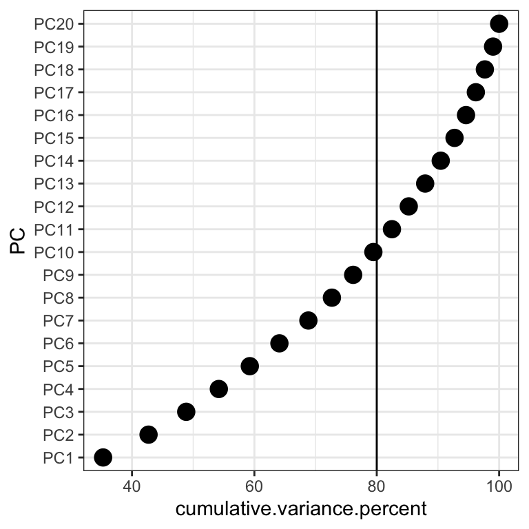
3. Create a Scree plot by plotting the eigenvalue or the proportion of variance from that eigenvalue against the PC number.
gridExtra::grid.arrange(
fviz_eig(pc_dep, choice = "eigenvalue", addlabels = TRUE),
fviz_screeplot(pc_dep, addlabels = TRUE)
)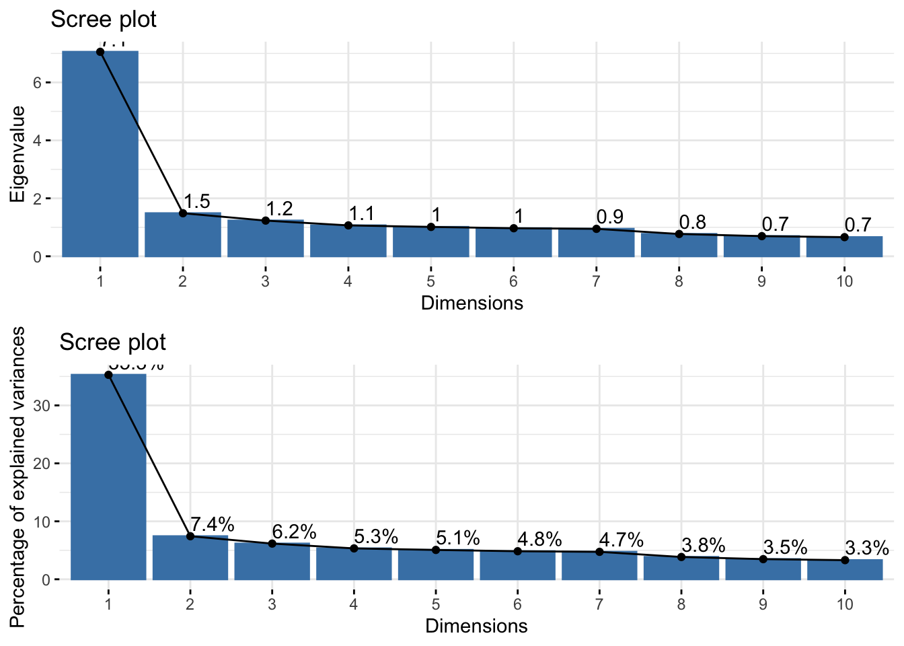
- Option 1: Take all eigenvalues > 1 (\(m=5\))
- Option 2: Use a cutoff point where the lines joining consecutive points are steep to the left of the cutoff point and flat right of the cutoff point. Point where the two slopes meet is the elbow. (\(m=2\)).
4. Examine the loadings
pc_dep$loadings[1:3,1:5] Comp.1 Comp.2 Comp.3 Comp.4 Comp.5
C1 0.2774384 0.14497938 0.05770239 0.002723687 0.08826773
C2 0.3131829 -0.02713557 0.03162990 -0.247811083 0.02439748
C3 0.2677985 0.15471968 0.03459037 -0.247246879 -0.21830547Here
- \(X_{1}\) = “I felt that I could not shake…”
- \(X_{2}\) = “I felt depressed…”
So the PC’s are calculated as
\[ C_{1} = 0.277x_{1} + 0.313x_{2} + \ldots \\ C_{2} = -0.1449x_{1} + 0.0271x_{2} + \ldots \]
etc…
The full question text for the depression data used here can be found on Table 14.2 in the PMA6 textbook.
5. Interpret the PC’s
- Visualize the loadings using
heatmap.2()in thegplotspackage.- I reversed the colors so that red was high positive correlation and yellow/white is low.
- half the options I use below come from this SO post. I had no idea what they did, so I took what the solution showed, and played with it (added/changed some to see what they did), and reviewed
?heatmap.2to see what options were available.
heatmap.2(pc_dep$loadings[,1:5], scale="none", Rowv=NA, Colv=NA, density.info="none",
dendrogram="none", trace="none", col=rev(heat.colors(256)))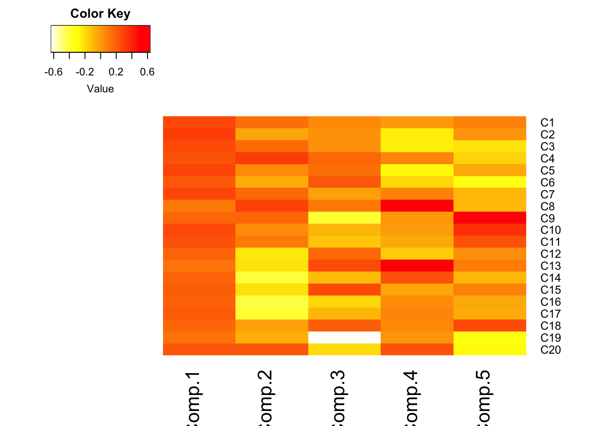
- Loadings over 0.5 (red) help us interpret what these components could “mean”
- Must know exact wording of component questions
- \(C_{1}\): a weighted average of most items. High value indicates the respondent had many symptoms of depression. Note sign of loadings are all positive and all roughly the same color.
- Recall
- \(C_{2}\): lethargy (high energetic). High loading on c14, 16, 17, low on 4, 8, 20
- \(C_{3}\): friendliness of others. Large negative loading on c19, c9
etc.
Contributions*
fviz_contrib(pc_dep, choice = "var", axes = 1, top=10)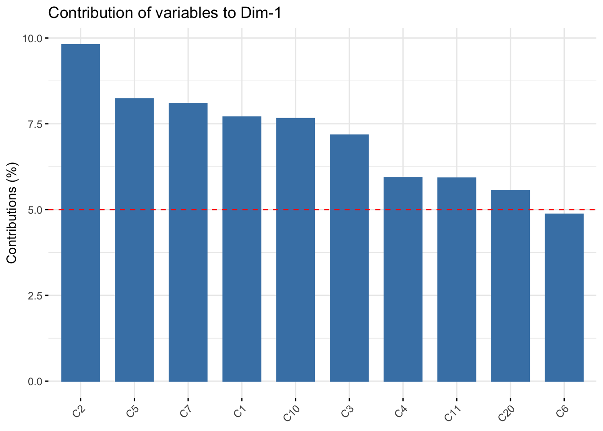
fviz_contrib(pc_dep, choice = "var", axes = 2, top=10)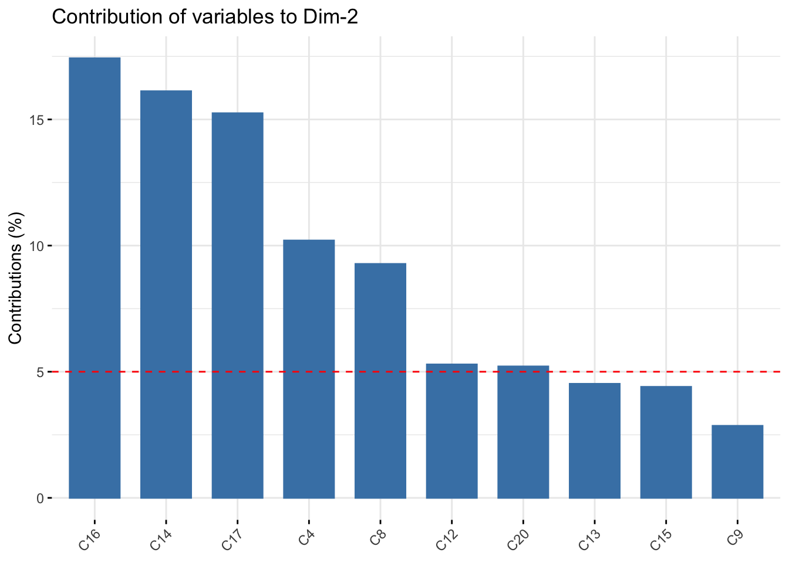
fviz_pca_var(pc_dep, col.var = "contrib", axes=c(1,2),
gradient.cols = c("#00AFBB", "#E7B800", "#FC4E07"),
repel = TRUE # Avoid text overlapping
)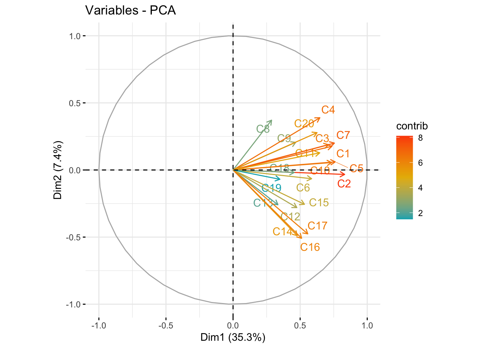
fviz_pca_var(pc_dep, col.var = "contrib", axes=c(3,4),
gradient.cols = c("#00AFBB", "#E7B800", "#FC4E07"),
repel = TRUE # Avoid text overlapping
)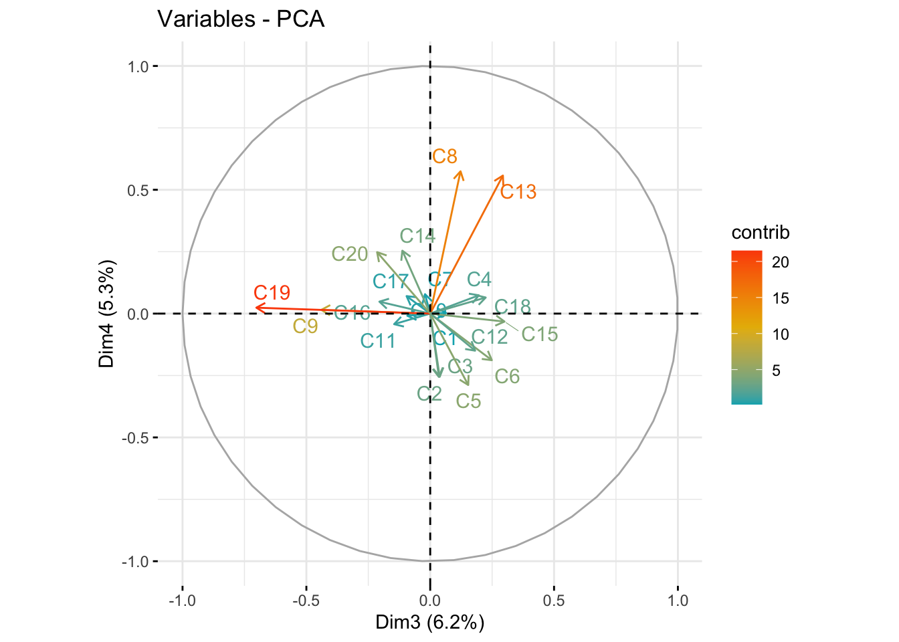
14.8 Use in Multiple Regression
- Choose a handful of few principal components to use as predictors in a regression model
- Leads to more stable regression estimates.
- Alternative to variable selection
- Ex: several measures of behavior.
- Use PC\(_{1}\) or PC\(_{1}\) and PC\(_{2}\) as summary measures of all.
14.8.1 Example: Modeling acute illness
The 20 depression questions C1:C20 were designed to be added together to create the CESD scale directly. While this is a validate measure, what if some components (e.g. had crying spells) contributes more to someones level of depression than another measure (e.g. people were unfriendly). Since the PC’s are linear combinations of the \(x\)’s, the coefficients \(a\), or the loadings, aren’t all equal as we’ve seen. So let’s see if the first two PC’s (since that’s what was chosen from the scree plot) can predict chronic illness better than the straight summative score of cesd.
1. Extract PC scores and attach them to the data.
The scores for each PC for each observation is stored in the scores list object in the pc_dep object.
dim(pc_dep$scores); kable(pc_dep$scores[1:5, 1:5])[1] 294 20| Comp.1 | Comp.2 | Comp.3 | Comp.4 | Comp.5 |
|---|---|---|---|---|
| -2.446342 | 0.6236068 | 0.1288289 | -0.2546597 | -0.1624772 |
| -1.452116 | -0.1763085 | 0.5861563 | -0.6781969 | -0.3225529 |
| -1.468211 | -0.4350019 | 0.2893955 | -0.3243790 | -0.2513590 |
| -1.324852 | 1.7766419 | 1.0833599 | 1.2651869 | -1.1339350 |
| -1.449606 | 2.3576522 | -0.7489288 | 1.9464680 | 1.2229057 |
depress$pc1 <- pc_dep$scores[,1]
depress$pc2 <- pc_dep$scores[,2]2. Fit a model using those PC scores as covariates
Along with any other covariates chosen by other methods.
glm(ACUTEILL~pc1+pc2, data=depress, family='binomial') %>% summary()
Call:
glm(formula = ACUTEILL ~ pc1 + pc2, family = "binomial", data = depress)
Coefficients:
Estimate Std. Error z value Pr(>|z|)
(Intercept) -0.87695 0.12901 -6.798 1.06e-11 ***
pc1 0.07921 0.04608 1.719 0.0856 .
pc2 0.10321 0.10409 0.992 0.3214
---
Signif. codes: 0 '***' 0.001 '**' 0.01 '*' 0.05 '.' 0.1 ' ' 1
(Dispersion parameter for binomial family taken to be 1)
Null deviance: 357.13 on 293 degrees of freedom
Residual deviance: 353.09 on 291 degrees of freedom
AIC: 359.09
Number of Fisher Scoring iterations: 4glm(ACUTEILL~CESD, data=depress, family='binomial') %>% summary()
Call:
glm(formula = ACUTEILL ~ CESD, family = "binomial", data = depress)
Coefficients:
Estimate Std. Error z value Pr(>|z|)
(Intercept) -1.09721 0.18479 -5.938 2.89e-09 ***
CESD 0.02494 0.01392 1.792 0.0731 .
---
Signif. codes: 0 '***' 0.001 '**' 0.01 '*' 0.05 '.' 0.1 ' ' 1
(Dispersion parameter for binomial family taken to be 1)
Null deviance: 357.13 on 293 degrees of freedom
Residual deviance: 353.97 on 292 degrees of freedom
AIC: 357.97
Number of Fisher Scoring iterations: 4In this example, the model using the PC’s and the model using cesd were very similar. However, this is an example where an aggregate measure such as cesd has already been figured out scientifically and validated. This is not often the case, expecially in exploratory data analysis when you are not sure -how- the measures are correlated.
14.9 Things to watch out for
- Eigenvalues are estimated variances of the PC’s and so are subject to large sample variations.
- The size of variance of last few principal components can be useful as indicator of multicollinearity among original variables
- Principal components derived from standardized variables differ from those derived from original variables
- Important that measurements are accurate, especially for detection of collinearity
Caution
Arbitrary cutoff points should not be taken too seriously.
14.10 Additional References
A collection of other tools and websites that do a good job of explaining PCA.
- Principal Component Analysis Essentials in R tutorial by STHDA
- Stack Overflow This has animations, and walks through the explanation using wine and “how you would explain it to your grandma”.